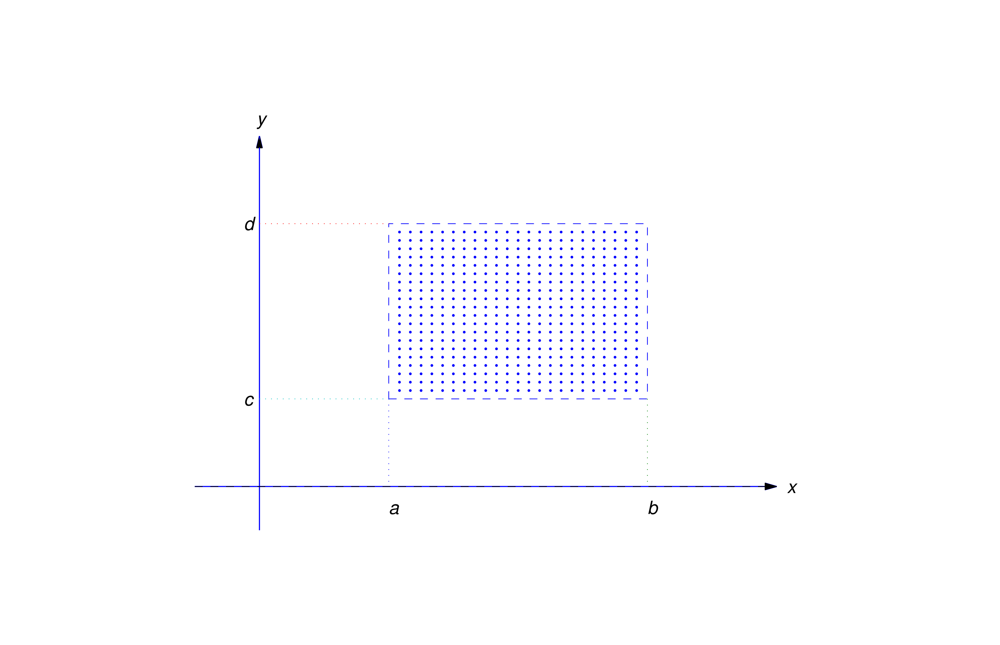

2.3 Existence and Uniqueness of Solutions of Nonlinear Equations
Open Rectangle
Although there are methods for solving some nonlinear equations, it’s
impossible to find useful formulas for the solutions of most. Whether
we’re looking for exact solutions or numerical approximations, it’s useful
to know conditions that imply the existence and uniqueness of solutions of
initial value problems for nonlinear equations. In this section we state
such a condition and illustrate it with examples.

Figure 2.3.1An open rectangle
Some terminology: an open rectangle \(R\) (Shown in Figure 2.3.0) is a
set of points \((x,y)\) such that
\[ a<x<b \quad \mbox {and}
\quad c<y<d \]
We’ll denote this set by \(R: \{ a < x < b, c < y < d \}\).
"Open" means that the boundary rectangle isn’t included in the set \(R\)
Existence and Uniqueness Theorem
The next theorem gives sufficient conditions for existence and uniqueness
of solutions of IVPs for first order nonlinear
differential equations.
Theorem 2.3.1
If \( f(x,y) \) is continuous on an open rectangle \( R: \{ a < x < b, c < y < d \} \) that contains \( (x_0,y_0),\) then there exists at least one solution to the IVP (2.3.1) on some open subinterval of \( (a,b) \) that contains \( x_0 \) but that solution may not be unique
\begin {equation} \label {eq:2.3.1}
\frac{dy}{dx}=f(x,y) \quad\quad y(x_0)=y_0 \
\end {equation}
If both \(f(x,y)\) the function and \(f_y(x,y)\) the partial derivative with respect to \(y\) are continuous on \(R\) then the IVP (2.3.1) has a unique solution on some open subinterval of \((a,b)\) that contains \(x_0\) and the largest interval that has a unique solution must have continuity of both \(f(x,y)\) and \(f_y(x,y)\) on that interval
It’s important to understand exactly what Theorem
2.3.1
says.
(a) is an existence theorem. It
guarantees that a solution exists on some open interval that
contains \(x_0\), but provides no information on how to find the
solution, or to determine the open interval on which it exists.
Moreover, (a) provides no information on the number of
solutions that (2.3.1) may have. It leaves open the possibility that (2.3.1) may have two or more solutions that differ for values of \(x\)
arbitrarily close to \(x_0\). Example 2.3.6 demonstrates this.
(b) is a uniqueness theorem. It guarantees
that (2.3.1) has a unique solution on some open interval (a,b) that contains
\(x_0\). However, if \((a,b)\ne (-\infty ,\infty )\), (2.3.1) may have
more than one solution on a larger interval that contains
\((a,b)\). For example, it may happen that \(b<\infty \) and all
solutions have the same values on \((a,b)\), but two solutions \(y_1\)
and \(y_2\) are defined on some interval \((a,b_1)\) with \(b_1>b\),
and have different values for \(b<x<b_1\); thus, the graphs of the
\(y_1\) and \(y_2\) “branch off” in different directions at \(x=b\).
(Example 2.3.7 and Figure 2.3.3). In this case, continuity implies that \(y_1(b)=y_2(b)\) (call their
common value \(\overline y\)), and \(y_1\) and \(y_2\) are both
solutions of the initial value problem
\begin {equation} \label{eq:2.3.2}
\frac{dy}{dx}=f(x,y),\quad y(b)=\overline y
\end {equation}
that differ on every open interval that contains \(b\). Therefore \(f\)
or \(f_y\) must have a discontinuity at some point in each open
rectangle that contains \((b,\overline y)\), since if this were not so,
(2.3.2) would have a unique solution on some open interval that contains
\(b\). We leave it to you to give a similar analysis of the case where
\(a>-\infty \).
Determine where a solution exists for the IVP (Theorem 2.3.1.a)
If the IVP has a solution, determine where it is unique (Theorem 2.3.1.b)
Solution
Theorem 2.3.1.a guarantees that there exists a solution to the IVP so long as \( f(x,y) \) is continuous on an open interval containing \( x_0 \) so we start by identifing \( f(x,y) \) and check what intervals it is continuous on.
\begin{equation*}
\frac{dy}{dx} = \overset{f(x,y)}{\overbrace{\frac{x^2-y^2}{1+x^2+y^2}}}
\Longrightarrow
f(x,y) = \frac{x^2-y^2}{1+x^2+y^2}
\end{equation*}
Since \( f(x,y) \) is a rational function the only possible points of discontinuity occur when the denominator equals zero:
\begin{equation*}
1+x^2+y^2 = 0
\end{equation*}
This can only occur when the sum of squares is a negative value \( x^2 + y^2 = -1 \)
and since all real numbers squared are positive, there are no real numbers that would make this true meaning \( f(x,y) \) is continuous for all points \( (x,y). \) Thus Theorem 2.3.1.a indicates that there exists at least one solution to the IVP (2.3.3) on every open interval containing any \( x_0 \)
Now we know that a solution exists on every open interval, but we would like to know if that solution is unique. Theorem 2.3.1.b garantees the solution is unique as long as the function \( f(x,y) \) well as its partial derivative \( f_y(x,y) \) is continuous on the open interval containing thus we can find out by finding the partial derivative with respect to \( y \) using the quotient rule
\begin{align*}
f_y(x,y) = & \frac{\partial}{\partial y}\left(\frac{x^2-y^2}{1+x^2+y^2}\right) \\
= & \frac{\left(1+x^2+y^2\right) \frac{\partial}{\partial y} \left(x^2-y^2\right) - \left(x^2-y^2\right) \frac{\partial}{\partial y} \left(1+x^2+y^2\right)}{\left(1+x^2+y^2\right)^2} \\
= & \frac{\left(1+x^2+y^2\right) \left(-2y\right) - \left(x^2-y^2\right) \left(2y \right)}{\left(1+x^2+y^2\right)^2} \\
= & \frac{ -2y \Big[ \left(1+x^2+y^2\right) + \left(x^2-y^2\right) \Big] }{\left(1+x^2+y^2\right)^2} \\
= & -\frac{2y\left(1+2x^2\right)}{\left(1+x^2+y^2\right)^2} \\
\end{align*}
Since \( f_y(x,y) \) is a rational function, again the only possible points of discontinuity occur when the denominator equals zero
\begin{equation*}
\left(1+x^2+y^2\right)^2 = 0
\end{equation*}
Again, this can only occur when the sum of squares is a negative value \( x^2 + y^2 = -1 \)
and since there are no real numbers that would make this true, this means \( f_{y}(x,y) \) is continuous for all points \( (x,y). \) Thus Theorem 2.3.1.b indicates that there exists a unique solution to the IVP (2.3.3) on every open interval containing any \( x_0 \)
Determine where a solution exists for the IVP (Theorem 2.3.1.a)
If the IVP has a solution, determine where it is unique (Theorem 2.3.1.b)
Solution
Theorem 2.3.1.a guarantees that there exists a solution to the IVP so long as \( f(x,y) \) is continuous on an open interval containing \( x_0 \) so we start by identifing \( f(x,y) \) and check what intervals it is continuous on.
\begin{equation*}
\frac{dy}{dx} = \overset{f(x,y)}{\overbrace{\frac{x^2-y^2}{x^2+y^2}}}
\Longrightarrow
f(x,y) = \frac{x^2-y^2}{x^2+y^2}
\end{equation*}
Since \( f(x,y) \) is a rational function the only possible points of discontinuity occur when the denominator equals zero:
\begin{equation*}
x^2+y^2 = 0
\end{equation*}
This can only occur when the sum of squares is zero which only happens when both \( x=0 \) and \( y=0 \) in other words at the origin point \( (0,0) \) meaning \( f(x,y) \) is continuous for all points \( (x,y)\ne (0,0) \) Thus Theorem 2.3.1.a indicates that there exists at least one solution to the IVP (2.3.4) on every open interval from any open rectangle that does not contain the origin.
Now we know that a solution exists on every open interval that does not contain the origin, but we would like to know if that solution is unique. Theorem 2.3.1.b garantees the solution is unique as long as the function \( f(x,y) \) well as its partial derivative \( f_y(x,y) \) is continuous on the open interval containing thus we can find out by finding the partial derivative with respect to \( y \) using the quotient rule
\begin{align*}
f_y(x,y)
= & \frac{\partial}{\partial y}\left(\frac{x^2-y^2}{x^2+y^2}\right) \\
= & \frac{\left(x^2+y^2\right) \frac{\partial}{\partial y} \left(x^2-y^2\right) - \left(x^2-y^2\right) \frac{\partial}{\partial y} \left(x^2+y^2\right)}{\left(x^2+y^2\right)^2} \\
= & \frac{\left(x^2+y^2\right) \left(-2y\right) - \left(x^2-y^2\right) \left(2y \right)}{\left(x^2+y^2\right)^2} \\
= & \frac{ -2y \Big[ \left(x^2+y^2\right) + \left(x^2-y^2\right) \Big] }{\left(x^2+y^2\right)^2} \\
= & -\frac{2y\left(2x^2\right)}{\left(x^2+y^2\right)^2} \\
= & -\frac{4 x^2 y }{\left(x^2+y^2\right)^2} \\
\end{align*}
Since \( f_y(x,y) \) is a rational function, again the only possible points of discontinuity occur when the denominator equals zero
\begin{equation*}
\left(x^2+y^2\right)^2 = 0
\end{equation*}
Again, this can only occur when the sum of squares is zero \( x^2+y^2 = 0 \) which only happens when both \( x=0 \) and \( y=0 \) in other words at the origin point \( (0,0) \) meaning \( f_y(x,y) \) is continuous for all points \( (x,y)\ne (0,0) \) Thus Theorem 2.3.1.b indicates that there exists at least one solution to the IVP (2.3.4) on every open interval from any open rectangle that does not contain the origin.
Determine where a solution exists for the IVP (Theorem 2.3.1.a)
If the IVP has a solution, determine where it is unique (Theorem 2.3.1.b)
Solution
Theorem 2.3.1.a guarantees that there exists a solution to the IVP so long as \( f(x,y) \) is continuous on an open interval containing \( x_0 \) so we start by identifing \( f(x,y) \) and check what intervals it is continuous on.
\begin{equation*}
\frac{dy}{dx} = \overset{f(x,y)}{\overbrace{\frac{x+y}{x-y}}}
\Longrightarrow f(x,y) = \frac{x+y}{x-y}
\end{equation*}
Since \( f(x,y) \) is a rational function the only possible points of discontinuity occur when the denominator equals zero:
\begin{equation*}
x-y = 0
\end{equation*}
This can only occur when the difference of \( x \) and \( y \) is zero which only happens when \( x \) equals \( y \) in other words on the identity line \( y=x \) meaning \( f(x,y) \) is continuous for all points \( (x,y) \) not on the identity line \( y=x .\) Thus Theorem 2.3.1.a indicates that there exists at least one solution to the IVP (2.3.5) on every open interval from any open rectangle that does not contain the identity line \( y=x .\)
Now we know that a solution exists on every open interval that does not contain the identity line \( y=x ,\) but we would like to know if that solution is unique. Theorem 2.3.1.b garantees the solution is unique as long as the function \( f(x,y) \) well as its partial derivative \( f_y(x,y) \) is continuous on the open interval containing thus we can find out by finding the partial derivative with respect to \( y \) using the quotient rule
\begin{align*}
f_y(x,y)
= & \frac{\partial}{\partial y}\left(\frac{x+y}{x-y}\right) \\
= & \frac{\left(x-y\right) \frac{\partial}{\partial y} \left(x+y\right) - \left(x+y\right) \frac{\partial}{\partial y} \left(x-y\right)}{\left(x-y\right)^2} \\
= & \frac{\left(x-y\right)\left(1\right) - \left(x+y\right) \left(-1\right)}{\left(x-y\right)^2} \\
= & \frac{\left(x-y\right) + \left(x+y\right) }{\left(x-y\right)^2} \\
= & \frac{ 2x }{\left(x-y\right)^2} \\
\end{align*}
Since \( f_y(x,y) \) is a rational function, again the only possible points of discontinuity occur when the denominator equals zero
\begin{equation*}
\left(x-y\right)^2
\end{equation*}
Again, this can only occur when the difference of \( x \) and \( y \) is zero which only happens when \( x \) equals \( y \) in other words on the identity line \( y=x \) meaning \( f_y(x,y) \) is continuous for all points \( (x,y) \) not on the identity line \( y=x .\) Thus Theorem 2.3.1.b indicates that there exists a unique solution to the IVP (2.3.5) on every open interval from any open rectangle that does not contain the identity line \( y=x .\)
Determine where a solution exists for the IVP (Theorem 2.3.1.a)
If the IVP has a solution, determine where it is unique (Theorem 2.3.1.b)
Solve the IVP and check whether the existence and uniqueness agrees with Theorem 2.3.1
Solution
Theorem 2.3.1.a guarantees that there exists a solution to the IVP so long as \( f(x,y) \) is continuous on an open interval containing \( x_0 \) so we start by identifing \( f(x,y) \) and check what intervals it is continuous on.
\begin{equation*}
\frac{dy}{dx} = \overset{f(x,y)}{\overbrace{2xy^2}}
\Longrightarrow
f(x,y) = 2xy^2
\end{equation*}
Since \( f(x,y) \) is a polynomial function there are no points of discontinuity meaning \( f(x,y) \) is continuous for all points \( (x,y). \) Thus Theorem 2.3.1.a indicates that there exists at least one solution to the IVP (2.3.6) on every open interval containing \( x=0 \) the largest interval being \( (-\infty, \infty) \)
Now we know that a solution exists on every open interval, but we would like to know if that solution is unique. Theorem 2.3.1.b garantees the solution is unique as long as the function \( f(x,y) \) well as its partial derivative \( f_y(x,y) \) is continuous on the open interval containing thus we can find out by finding the partial derivative with respect to \( y \) using the power rule
\begin{align*}
f_y(x,y) = & \frac{\partial}{\partial y}\left(2xy^2\right) \\
= & 2\left(2xy\right) \\
= & 4xy \\
\end{align*}
Since \( f_y(x,y) \) is a polynomial function, again there are no points of discontinuity meaning \( f_y(x,y) \) is continuous for all points \( (x,y). \) Thus Theorem 2.3.1.b indicates that there exists a unique solution to the IVP (2.3.6) on every open interval containing \( x=0 \) the largest interval being \( (-\infty, \infty) \)
In Example 2.2.4
we found that the general solution of the differential equation (2.2.16) consists of both a singlar solution (the trivial solution) and a one-paramter family:
\begin {equation} \label {eq:2.3.7}
y(x) \equiv 0
\quad\quad
y(x) = \frac{1}{c-x^2}
\end {equation}
We first notice that the trivial solution satisfies the IVP (2.3.6) since it satisfies the initial condition \( y(0)=0 .\) Since Theorem 2.3.1.b guarantees a unique solution, this implies that the one-parameter family would not be able to satisfy the IVP so we'll check by evaluating it at the initial condition:
\begin {align*}
\underset{0}{\underbrace{y(0)}} = & \frac{1}{c-0^2} \\
0 = & \frac{1}{c} \\
\end {align*}
And we find that there is no value of \( c \) that exists to make the one-paramter family satisfy the initial condition, therefore it seems the unique solution for the IVP is the trivial solution which agrees with Theorem 2.3.1 that the IVP has a unique solution
Consider the IVP
\begin {equation} \label {eq:2.3.8}
\frac{dy}{dx}= \frac{10}{3}xy^{\frac{2}{5}} \quad\quad y(x_0)=y_0
\end {equation}
Sketch some integral curves on the direction field.
Determine where a solution exists for the IVP (Theorem 2.3.1.a)
If the IVP has a solution, determine where it is unique (Theorem 2.3.1.b)
Solution
Theorem 2.3.1.a guarantees that there exists a solution to the IVP so long as \( f(x,y) \) is continuous on an open interval containing \( x_0 \) so we start by identifing \( f(x,y) \) and check what intervals it is continuous on.
\begin{equation*}
\frac{dy}{dx} = \overset{f(x,y)}{\overbrace{\frac{10}{3}xy^{\frac{2}{5}}}}
\Longrightarrow
f(x,y) = \frac{10}{3}x \sqrt[\overset{\text{odd}}{\overbrace{5}}]{y^{2}}
\end{equation*}
Since \( f(x,y) \) is a radical function with odd index there are no points of discontinuity meaning \( f(x,y) \) is continuous for all points \( (x,y). \) Thus Theorem 2.3.1.a indicates that there exists at least one solution to the IVP (2.3.8) on every open interval containing any \( x_0 \) the largest interval being \( (-\infty, \infty) \)
Now we know that a solution exists on every open interval, but we would like to know if that solution is unique. Theorem 2.3.1.b garantees the solution is unique as long as the function \( f(x,y) \) well as its partial derivative \( f_y(x,y) \) is continuous on the open interval containing thus we can find out by finding the partial derivative with respect to \( y \) using the power rule
\begin{align*}
f_y(x,y) = & \frac{\partial}{\partial y}\left( \frac{10}{3}xy^{\frac{2}{5}} \right) \\
= & \frac{2}{5} \cdot \frac{10}{3} x y^{\frac{-3}{5}} \\
= & \frac{4}{3} \cdot \frac{x}{\sqrt[3]{y^{2}}} \\
\end{align*}
The only possible points of discontinuity occur when the denominator equals zero:
\begin{equation*}
\sqrt[3]{y^{2}} = 0
\end{equation*}
This can only occur when \( y \) is zero which only happens for points on the \( x- \)axis meaning \( f_y(x,y) \) is continuous for all points \( (x,y) \) in all rectangles that do not include any part of the \( x- \)axis (any points where \( y = 0 \)). Thus Theorem 2.3.1.b indicates that there exists a unique solution to the IVP (2.3.8) on every open interval from any open rectangle that does not contain the \( x- \)axis.
Since \( f(x,y) \) was continuous everywhere, Theorem 2.3.1.a already indicated that there always exists a solution, meaning that open intervals that do not contain the \( x- \)axis will have unique solutions and open intervals that do contain the \( x- \)axis will still have solutions but they won't be unique.
Show that Theorem 2.3.1 guarantees at least two distinct solutions
for the IVP (2.3.9) and find them
Final all four distinct solutions of the IVP (2.3.9) defined on \((-\infty ,\infty )\)
Solution
This IVP (2.3.9) is the same IVP as Example 2.3.5 with \( x_0 = 0 \) and \( y_0 = 0 \) and we already showed in that example that the IVP always has at least one solution everywhere on every open interval, and that the solution is unique whenever the open interval does not include the \(x-\)axis. Since the initial condition in this example is on the \(x-\)axis, this means the solution is not unique so we should be able to find two or more distinct solutions on every open interval containing \( x=0 \)
To show that the IVP (2.3.9) has two or more distinct solutions, we'll solve it. First notice the trivial solution \( y(x) \equiv 0 \) satisfies the differential equation, which we can verify by substitution:
\begin{align}
\frac{dy}{dx} = & {10 \over 3}xy^{\frac{2}{5}} \\
\frac{d}{dx} \Big( 0 \Big) = & {10 \over 3} x \Big(0\Big)^{\frac{2}{5}} \quad \checkmark \nonumber
\end{align}
And in fact, the trivial solution also satisfies the IVP (2.3.9) since it also satisfies the initial condition \( y(0) = 0 \) so we definitely know that there exists at least one solution, the trivial solution, which is defined on every open interval containing \( x=0\) with IOV \((-\infty ,\infty )\)
Now we will investigate if there are other solutions by seeking nontrivial solutions where \( y \ne 0 \) allowing us to divide by \( y^{\frac{2}{5}} \) to separate the variables
\begin{align}
\frac{dy}{dx} = & {10 \over 3}xy^{\frac{2}{5}} \nonumber \\
\frac{1}{y^{\frac{2}{5}}} \cdot \frac{dy}{dx} = & {10 \over 3}x \nonumber \\
\int \Big( \frac{1}{y^{\frac{2}{5}}}\frac{dy}{dx} \Big) dx = & \int \Big( {10 \over 3}x \Big) dx \nonumber \\
\int y^{-\frac{2}{5}} dy = & {10 \over 3} \int x dx \nonumber \\
\frac{5}{3} y^{\frac{3}{5}} = & {10 \over 3} \left(\frac{1}{2}x^2\right) + k \nonumber \\
\frac{5}{3} y^{\frac{3}{5}} = & {5 \over 3} x^2 + k \nonumber \\
y^{\frac{3}{5}} = & \frac{3}{5} \cdot {5 \over 3} x^2 + \underset{c}{\underbrace{ \frac{3}{5} k }} \nonumber \\
y^{\frac{3}{5}} = & x^2 + c \nonumber \\
y= & \left( x^2 + c \right)^{ \frac{5}{3} }
\end{align}
Now we have found the one-parameter family of functions (2.3.11) that is a solution of the differential equation (2.3.10) and we can verify (2.3.11) is a solution (2.3.10) by differentiating and substituting. We take note of the IOV for the solution based on the domain of (2.3.11) and since it is a radical with odd index, it is defined everywhere with IOV \((-\infty ,\infty )\)
Differentiate (2.3.11) with respect to \(x \) using the power rule and chain rule
In the case of this one-parameter family (2.3.11), the trivial solution is not in the family since there is no choice for \( c \) that can yield the trivial solution therefore the trivial solution is a singular solution. Therefore the general solution of (2.3.10) consists of both a singlar solution (the trivial solution) and a one-paramter family:
\begin {equation*}
y \equiv 0
\quad\quad
y = \left( x^2 + c \right)^{ \frac{5}{3} }
\end {equation*}
Now applying the initial conditon of the IVP (2.3.9) to the one-paramter family, we can solve for the constant \( c \)
\begin {align*}
\underset{0}{\underbrace{y(0)}} = & \left( 0^2 + c \right)^{ \frac{5}{3} } \\
0 = & c ^{ \frac{5}{3} } \Longrightarrow c = 0
\end {align*}
Substituting \( c = 0 \) we have a solution from the one-paramter family that also satisfies the IVP (2.3.9)
\begin {align*}
y
= & \left( x^2 + 0 \right)^{ \frac{5}{3} }
= \left( x^2 \right)^{ \frac{5}{3} }
= x^{ \frac{10}{3} }
\end {align*}
Now we have shown that there are two distinct solutions that satisfy the IVP (2.3.9), the trivial solution and a solution from the one-parameter family, both of which are defined on every open interval containing \( x=0 \)
\begin {equation*}
y \equiv 0
\quad\quad
y = x^{ \frac{10}{3} }
\end {equation*}
This agrees with Theorem 2.3.1 since the rectangle contains the
\(x-\)axis in the case of this IVP, that the solution is not unique, and in fact, we were able to find two distinct solutions to the IVP both of which are defined on every open interval containing \( x=0 \) with IOV \((-\infty ,\infty )\)
Figure 2.3.2a
Two solutions of (2.3.9), \(y=0\) and \(y=x^{10/3}\)
We already found two distinct solutions for the the IVP (2.3.9)
\begin {equation*}
y_1 \equiv 0
\quad\quad
y_2 = x^{ \frac{10}{3} }
\end {equation*}
Combining these we can create two additional distinct solutions using the piece-wise functions:
\begin {equation*}
y_3 =
\left \{
\begin {array}{cl}
0 & x < 0 \\
x^{ \frac{10}{3} } & x \ge 0
\end {array}
\right.
\quad
\text{and}
\quad
y_4 =
\left \{
\begin {array}{cl}
x^{ \frac{10}{3} } & x < 0 \\
0 & x \ge 0
\end {array}
\right.
\end {equation*}
Thus we have four distinct solutions which are all continuous and differentiable on \((-\infty ,\infty )\)
Figure 2.3.2b
Two more solutions of (2.3.9), \(y_3\) and \(y_4\)
Show that \( y_3 \) is continuous at \( x = 0 \) using the definition of continuity
Differentiate \( y_3 \) at at \( x = 0 \) using the limit definition of derivative
Show that \( y_4 \) is continuous at \( x = 0 \) using the definition of continuity
Differentiate \( y_4 \) at at \( x = 0 \) using the limit definition of derivative
Show that Theorem 2.3.1 guarantees a unique solution
for the IVP (2.3.12) and find the solution and the largest open interval on which it is unique
Show that Theorem 2.3.1 guarantees at least two distinct solutions
for the IVP (2.3.12) on \( (-\infty ,\infty )\)
Solution
This IVP (2.3.12) is the same IVP as Example 2.3.5 with \( x_0 = 0 \) and \( y_0 = -1 \) and we already showed in that example that the IVP always has at least one solution everywhere on every open interval, and that the solution is unique whenever the open interval does not include the \(x-\)axis. Since the initial condition in this example is not on the \(x-\)axis (it is below the \(x-\)axis), this means the IVP has a unique solution on some open interval containing \( x=0 \) and we will find it.
The IVP in Example 2.3.6 has the same differential equation (2.3.10) and we already found the general solution includes both a singlar solution (the trivial solution) and a one-paramter family:
\begin {equation*}
y \equiv 0
\quad\quad
y = \left( x^2 + c \right)^{ \frac{5}{3} }
\end {equation*}
Now applying the initial conditon of the IVP (2.3.12) to the one-paramter family, we can solve for the constant \( c \)
\begin {align*}
\underset{-1}{\underbrace{y(0)}} = & \left( 0^2 + c \right)^{ \frac{5}{3} } \\
-1 = & c ^{ \frac{5}{3} } \Longrightarrow c = -1
\end {align*}
Substituting \( c = -1 \) we have a solution from the one-paramter family that satisfies the IVP (2.3.12)
\begin {align}
y
= & \left( x^2 - 1 \right)^{ \frac{5}{3} }
\end {align}
Notice that this solution has a domain of \((-\infty ,\infty )\) since it is a radical with odd index and thus the IOV for the IVP (2.3.12) is also \((-\infty ,\infty )\)
However recall from Example 2.3.5 that while the IVP always has a solution everywhere on every open interval, in order to find a unique solution we must limit our open rectangles only to those open intervals that do not include the \(x-\)axis. Since the initial condition in this example is not on the \(x-\)axis (it is below the \(x-\)axis), then we need to investigate whether our function ever intersects the \(x-\)axis, so we locate the \(x-\)intercepts by setting \( y = 0 \) on (2.3.13) and solving for \( x \)
\begin {align*}
0 = \left( x^2 - 1 \right)^{ \frac{5}{3} }
\Longrightarrow &
0 = \left( x - 1 \right) \left( x + 1 \right) \\
\Longrightarrow &
x = 1 \quad \text{or} \quad x = -1
\end {align*}
This means that the solution (2.3.13) intersects the \(x-\)axis at \( x = 1 \) and \( x = -1 \) so the largest open interval containing our initial \(x\) value \( x = 0 \) is the open interval \( (-1,1) \) which is the largest open interval where the IVP (2.3.12) has the unique solution (2.3.13) meaning any larger open intervals will still have a solution but they will not be unique.
Figure 2.3.3b
\(y=\left( x^2 - 1 \right)^{ \frac{5}{3} }\) with IOV \((-1,1) \) unique solution of IVP (2.3.12)
We already found a particular solution (2.3.13) for the IVP (2.3.12)
\begin{align*}
y
= & \left( x^2 - 1 \right)^{ \frac{5}{3} }
\end{align*}
with IOV \((-\infty ,\infty )\) but remember it is only unique on \( (-1,1)\)
Since the solution intersects the \( y-\)axis at \( x = 1 \) and \( x = -1 \) then any open interval containing either of those points will have multiple solutions to the IVP. Since we are considering the open interval \((-\infty ,\infty )\) then we know that there will be multiple solutions, so we will call \( y_1 = \left( x^2 -1 \right)^{ \frac{5}{3} } \)
and then just like we did in Example 2.3.6 we can combine this solution on the interval \( (-1,1) \) with other solutions from the general solution to create additional distinct solutions using piece-wise functions.
For instance, we will create a new function, we'll call it \(y_2 \) that is defined as the same function as \( y_1 \) on \( (-1,1) \) but define it as zero everywhere else:
\begin {equation*}
y_2 =
\left \{
\begin {array}{cl}
0 & x \le -1 \\
\left( x^2 -1 \right)^{ \frac{5}{3} } & -1 < x < 1 \\
0 & x \ge 1
\end {array}
\right.
\end {equation*}
Figure 2.3.3c
\( y_2 \) with IOV \((-\infty,\infty) \) non-unique solution of IVP (2.3.12)
Show that \( y_2 \) is continuous at \( x = -1 \) and \( x = 1 \) using the definition of continuity
Differentiate \( y_2 \) at at \( x = -1 \) and \( x = 1 \) using the limit definition of derivative
Or we could create other new functions, \( y_3 \) and \( y_4 \), where we define is as the same function as \( y_1 \) on \( (-1,1) \) and one of the tails, but define it as zero on the other tail:
\begin {equation*}
y_3 =
\left \{
\begin {array}{cl}
\left( x^2 -1 \right)^{ \frac{5}{3} } & x < 1 \\
0 & x \ge 1 \\
\end {array}
\right.
\quad
\text{and}
\quad
y_4 =
\left \{
\begin {array}{cl}
0 & x \le -1 \\
\left( x^2 -1 \right)^{ \frac{5}{3} } & x > -1 \\
\end {array}
\right.
\end {equation*}
Figure 2.3.3d
\( y_2 \) with IOV \((-\infty,\infty) \) non-unique solution of IVP (2.3.12)
Show that \( y_3(x) \) is continuous at \( x = 1 \) using the definition of continuity
Differentiate \( y_3(x) \) at at \( x = 1 \) using the limit definition of derivative
Show that \( y_4(x) \) is continuous at \( x = -1 \) using the definition of continuity
Differentiate \( y_4(x) \) at at \( x = -1 \) using the limit definition of derivative
We have found four distinct solutions which are all continuous and differentiable on \((-\infty ,\infty )\), and there are infinitely many other solutions
Consider the IVP
\begin {equation} \label {eq:2.3.14}
\frac{dy}{dx}={10 \over 3}xy^{2/5}
\quad \quad y(0)=1
\end {equation}
Show that Theorem 2.3.1 guarantees a unique solution for the IVP (2.3.14) and find the solution and the largest open interval on which it is unique
Solution
This IVP (2.3.14) is the same IVP as Example 2.3.5 with \( x_0 = 0 \) and \( y_0 = 1 \) and we already showed in that example that the IVP always has at least one solution everywhere on every open interval, and that the solution is unique whenever the open interval does not include the \(x-\)axis. Since the initial condition in this example is not on the \(x-\)axis (it is above the \(x-\)axis), this means the IVP has a unique solution on some open interval containing \( x=0 \) and we will find it.
The IVP in Example 2.3.6 has the same differential equation (2.3.10) and we already found the general solution includes both a singlar solution (the trivial solution) and a one-paramter family:
\begin {equation*}
y(x) \equiv 0
\quad\quad
y(x) = \left( x^2 + c \right)^{ \frac{5}{3} }
\end {equation*}
Now applying the initial conditon of the IVP (2.3.14) to the one-paramter family, we can solve for the constant \( c \)
\begin {align*}
\underset{1}{\underbrace{y(0)}} = & \left( 0^2 + c \right)^{ \frac{5}{3} } \\
1 = & c ^{ \frac{5}{3} } \Longrightarrow c = 1
\end {align*}
Substituting \( c = 1 \) we have a solution from the one-paramter family that satisfies the IVP (2.3.14)
\begin {align}
y(x)
= & \left( x^2 + 1 \right)^{ \frac{5}{3} }
\end {align}
We take note of the IOV for the solution based on the domain and since it is a radical with odd index, it is defined everywhere with IOV \((-\infty ,\infty )\)
Now recall from Example 2.3.5 that while the IVP always has at least one solution everywhere on every open interval, in order to find a unique solution we must limit our open rectangles only to those open intervals that do not include the \(x-\)axis. Since the initial condition in this example is not on the \(x-\)axis (it is above the \(x-\)axis), then we need to investigate whether our function ever intersects the \(x-\)axis, so we locate the \(x-\)intercepts by setting \( y = 0 \) on (2.3.13) and solving for \( x \)
\begin {align*}
0 = \left( x^2 + 1 \right)^{ \frac{5}{3} }
\Longrightarrow &
0 = x^2 + 1 \\
\Longrightarrow &
x = \pm i \\
\end {align*}
This means that the solution (2.3.15) has no \(x-\)intercepts and never intersects the \(x-\)axis meaning the largest open interval would be \( (-\infty,\infty) \) and (2.3.13) is the unique solution shown in Figure 2.3.4.